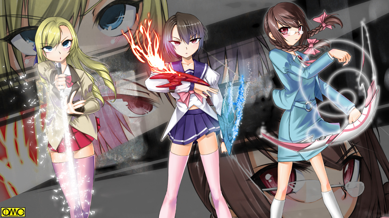

この日はいつもの情報交換会だった。そして今回は清良もメンバーに入っていた。
礼。そして順の性格はあまり好意を抱けなかったがキャロルでさえ知らなかった六武衆のような存在もいる。
それを確認するために参加することにした。
場所は百紀高校。交換会はここで固定していた。
それというのも素性が知られるのを防ぐためである。
ここを訪れる清良と礼は「戦乙女かも？」と疑惑を抱かれるが、残りの一人は百紀高校全員が「容疑者」だ。
つまり会合の場所を持ち回りにしていたら三箇所すべてに現れた人間に絞られる。
それを嫌って百紀高校に固定してある。
同様の理由から喫茶店なども使わない。神経質な礼の提案である。
相手がどんな人間についているのか「変身」するまでわからないのだ。伏せておける情報をわざわざ明かす必要もない。
これに関しては清良も賛成していた。
スストに関しては偶然だが明らかにルコは自分を狙って友紀に憑いた。
それを考えると他の二人に試さないとは言い切れない。
だから伏せるのには賛成した。
礼は森本を同行させたが清良は一人できた。
友紀を巻き込みたくない思いゆえである。
「そういや番長はどうした？」
どちらかというと近い存在のせいか岡元のことは嫌っていない清良。
「番長ねぇ。なんか呼ばれて行ったみたい。また果し合いかな。あはははは」
「おい。笑ってる場合か」
礼がいらついて怒鳴る。軽く呆れたのが口調でわかる。
「平気だよ。番長強いもん」
絶大な信頼関係で結ばれている岡元と順であった。
戦乙女セーラ
ＥＰＩＳＯＤＥ２８「速射」
同時刻。百紀高校からは２キロも離れていない倒産したボウリング場。
当然のごとく施錠してあるがあっさりと破壊して中に入る貝塚。岡元を招き入れる。
「なんだ。偉くせまっ苦しいところでやるんだな」
照明もつかない。ただし窓はふさいでないためそこから光が入る。
夕方に差し掛かるが真夏ゆえまだ強烈な光だ。
「ああ。ここなら邪魔は入らない」
何処か違和感のある喋り方の貝塚だが初対面故に岡元には見抜けなかった。
二人がいるボウリング場を抱えるビルの屋上に軽部がいた。
人間のものではない視力で人気の無い道路を窺っている。
（この位置はジャンスが出現した高校から距離が離れていない。奴らは我々が戦闘形態になるとわかるらしい。駆けつけてきた奴が怪しい。特に高岩清良がいれば確率は跳ね上がる）
岡元の元に向かうには真正面から入るか、さもなきゃ屋上から侵入である。
どちらにしてもここで見張っていればわかる。
「張り込み」を続けていた。
潰れたボウリング場のフロント。レーンを目前にした場所。
「ふふふふっ。ここで存分遣り合おうじゃないか」
「ほほう。なかなか漢気のある奴だ。てっきり兵隊が待ち構えていると思ったらあくまで一対一か。感心感心。男ならそうでないとな」
うんうんと一人で納得して頷いている岡元。
「はたして『男』かな？」
「何？」
思わず尋ね返す岡元。先日のコックローチアマッドネスが頭をよぎる。
不適に笑う貝塚。その姿が変っていく。戦国の鎧武者のような姿へ。
その「ヨロイ」は貝を連想させる質感だった。全身を巻貝を彷彿とさせる鎧で固めている。面までしている。
「……やっぱりそうか。オレに単独で挑んでくるのはよほどの大バカか、身の程にあわぬ『力』を手にして調子に乗っているかだ」
自信過剰ではない。実際にケンカ無敵である。
「で、オレになんの恨みだ？ 貴様とは初対面だったが」
面倒くさそうに言う岡元。
挑発して相手の平常心をなくさせる目的である。
内心としてはさすがに怪人相手で焦っているが表情には出さない。やせ我慢に近い意地だった。
「黙れ！ いつもいつも見せ付けやがって。貴様がいなくなれば順は」
「順？ あー……」
実は過去にも順を本当に女の子と思い込みうろちょろしていたものがいた。
岡元が常にそばにいるため諦めるのが大半だが、この貝塚はアマッドネスに魂を売り渡してまで岡元を排除に掛かったと理解した。
「そういうことか。だがまぁ化物なら遠慮はいらんな」
わざわざ「化物」という表現を用いたのは挑発である。そしてそれを完璧にすべく指をさして言う。
「アマッドネス。その命、神に返せ」
「むっ」「ちっ」「あれ？」
三人が同時に反応した百紀高校の一室。カラス型の人造生命体。ウォーレンも飛び込んでくる。
コウモリのような動きで飛び回り「来たぜ来たぜ。ジャンスぅ」とハイテンションに告げる。
「方角は」
もちろん三人とも一致している。清良はこの辺りの地理に疎いのでわからなかったが順は気がついた。
「もしかして番長の決闘している場所？ そこに出現…」
「というより相手がアマッドネスじゃねぇのか」
当然の疑問を清良が告げる。
「しかもこの感触。ドクトルに憑いていたサソリ型と同じくらい強い」
「ああ。くそったれのファルコンなみにな」
「六武衆ってことですか？」
情報交換で順も六武衆について知識を得た。
「まずいな。たぶんこの前のゴキブリ女より手ごわいぞ」
単純にアマッドネス出現。礼。清良にとっては遺恨のある六武衆の一員の可能性。
そしてピンチに陥っているのが知っている人間ということで彼らは誰からとも無く飛び出して行った。
「キャロル」「はい」
「ドーベル」「はっ」
「ウォーレン」「おうよ」
清良と礼は控えていた使い魔たちを呼び出す。順は傍らにいたウォーレンに呼びかける。
三体はそれぞれビークルモードへと転身。それにまたがる三人。一斉に走り出す。
（来た！）
監視をしていた軽部は心中で思わず声を上げる。
その驚異的な視力は道を行く彼らの顔を判別出来た。
（高岩清良！ やはり奴か。すると後の二人もか）
人気が無いのをいいことにその場で乗り物を動物形態に戻したのが決め手になった。
そのまま三体の使い魔は周辺警戒の任務を与えられる。
（やはり残りの二人も戦乙女の現世の姿か。伊藤礼。押川順だったな）
警察官の身分。そしてコックローチアマッドネスの事件を利用して順。そして定期的に来ている「王真高校の生徒」の身元を調べ上げた。
ほとんど確信していたがこれでますます確率が高くなる。
（さて。奴らに気づかれぬように）
シェルアマッドネスと岡元が戦っている場所へと移動する。
「岡元！？」
最初に飛び込んだのは清良だった。次が礼。最後が順だった。
ところが蹲る岡元を見て一番驚いたのが順だった。
「番長！？」
「じゅ…順。ふっ。かっこ悪いところを見られたなぁ」
彼の両の拳は真紅に染まっていた。血染めの拳だった。
「このやろう。とても頑丈に出来ている。オレのゲンコツでもダメだったわ」
雑兵相手ではない。さすがの岡元も怪人。しかも中堅幹部クラスのそれを相手には分が悪かった。
攻撃も受けていたので限界を超えて気絶する。
「番長！」
思わず駆け寄る順。だが大きなダメージが拳だけとわかりほっとする。
どうやら固いガードを破れず拳の方が壊れたと。その痛みと疲労で気を失っただけで拳以外にダメージがないとわかり安堵する。
「くくく。やっと気絶したか。どうだ順。コイツに幻滅したか？ さあ。見限れ。そしてオレに乗り換えろ」
口調と声が男のものになる。シェルアマッドネスは人間の男の姿へとシフトする。
「あんたは？」
いつもニコニコしている順にしては冷たく感じる口調で尋ねる。
だがいよいよ「好きな女」を目の前にした貝塚は舞い上がって、そんな変化を気にしてられなかった。
「俺は貝塚真樹男。順。ずっとお前を見ていた。お前がす……？ お前…なんでそんな男の格好をしている？」
貝塚は女装した順しか見ていなかった。そしてこの言葉で順は事情を瞬時に察知した。
だから岡元に対しする仕打ちの報復できつい一言を選んだ。
「ごめんなさい。お友達でいましょうね」
ある意味一番告白で聴きたくない言葉を恥ずかしげも無く言い放つ順。
「誤解を深くするな！」
清良が突っ込む。
「ま…まさかお前。男だったというのかっ！？」
わなわなと震える貝塚。「裏切られた」というように目を見開いている。
それに対してのほほんとした順のリアクション。これも何処かわざとという印象がある。
「いやー。ほんとは女の子でいたいんだけど。せめて格好だけでもと思うんだけどこのお二人に怒られるから男子の格好」
「ゆ…許せん。男の純情を踏みにじって騙しやがってぇぇぇぇっ」
（ちょっとだけ気持ちは理解できる…）
あろうことか同情する清良。
「なるほどな」
礼は推理を進めていた。
「わざわざ俺たちが探知できる距離でやっていたのはおびき出しで正解か」
「ご丁寧に人目に付かないような場所だ。俺たちがいつでも変身をできるようにということか」
「そのためだけに番長をこんな目に…」
理屈は理解出来た。自分たちの正体を探る。それが目的であると。
恐らく別のアマッドネスが監視しているだろうと想像はできる。
しかし実際に岡元が蹲っているのを見たらそんなことを言ってられなくなった。
そこに追い討ちをかけるべく貝塚が鎧武者のような巻貝のアマッドネスに変身する。
「あたしは六武衆の一人。剛将。サザ」
「六武衆だと？」
これが確定すると清良。礼も平静ではいられない。
「そうかよ。それじゃファルコンの代りにてめえを殴らせてもらうぜ」
友紀の件で未だに怒りを抱く清良が右手を天に。左手を地に向ける。鬼のような表情だ。
「待て。それならドクトルの件でのオレが先だ」
礼が右手を肩の高さで前方に真っ直ぐ突き出し、左手をへその位置に添える。光の渦から小太刀が出現。
「わぁい。ダブル通り越してトリプル変身だね」
岡元の無事を確認したら途端にいつものマイペースに戻った順が左手を高々と掲げて弓を掴む。
「そんじゃ早い者勝ちだ」
清良の腕が水平になってわきにひきつけられる。
「いいだろう。それで公平だ」
小太刀を持ち替えて腰だめに。そのつかに右手をかける。
「相手は強いみたいだから気をつけないと」
左手を真正面へと移動させその「弦」に右手をかける順。
「変身！」
三者が同時に叫んだ。清良は両手を突き出しガントレットをクロスさせる。
礼は小太刀を抜き、順は弦を弾く。
眩い光が三人を包み、それが収まると三人の美少女がそこにいた。
「拳の戦乙女。セーラぁっ」
「剣の戦乙女。ブレイザっ」
「射抜く戦乙女。ジャンス」
太古の闘い以来、現世で三人の戦乙女が初めて揃い踏みした瞬間だった。

このイラストはＯＭＣによって作成されました。
クリエイターのていくあうとさんに感謝！
このボウリング場は１フロアだけで経営されていた。
そのため全体を見渡せる部屋もある。そこに軽部は潜んでいた。
気配を殺して監視せねばならないが、不覚にも笑いがこみ上げてきそうになる。
（こうまで上手く行くとはな。ガラ様は人の心は意外に強いと仰っていたが、案外もろい部分もある。自分たちの正体を探られている危険性よりも我ら六武衆に対する「恨み」が先走るとは。もっともそれはクイーンのカケラの影響かも知れぬが。
ふふ。奴らにしてみればサザを倒してしまえば口封じになるという読みだろうがそう上手く行くかな？ 仮にも剛将の名を持つもの。例え三人がかりでも簡単には倒せんぞ）
サザの第一の任務は戦乙女をおびき出し、その正体を探るもの。だからあえて変身完了を待っていた。
しかしここで倒せば正体など関係ないと思っていた。既に正体判明は果たした。何処かで見ている死将・アヌが既に情報を得ただろう。
だから後は自由だ。三人がかり上等。まとめて相手してやる。そう思っていた。
「先手必勝」
元々喧嘩っ早い清良の精神のまま変身したセーラがセーラー服姿で突っ込んでゆく。
攻撃能力は謎だが多少の攻撃はこの「鎧」がはじくと踏んでだ。
シェルアマッドネスも突っ込んでいく。セーラがキャストオフして飛ばした破片もものともしないで突っ込んでいく。
動きを凍結させるべく左腕を叩きつけるセーラ。だが
「いってぇえええっっ」
しびれた腕を振っている。攻撃どころではない。
「ふふふふ。ミュスアシには『攻撃は最大の防御』という言葉があるそうだね。だがあたしに言わせりゃ『防御は最大の攻撃』。鉄壁の守りは相手を疲弊させるだけ」
「ごたくはそこまでだ」
既にキャストオフして和装のヴァルキリアフォームに転じていたブレイザが刀の切先を突きたてにかかる。
（波状攻撃？ 違うな。むしろ手柄争いでサザの首を取りに掛かっている）
軽部はそう分析していた。
（やはり奴らは太古の時代の『清らかな存在』ではない。付け入る隙はある）
「そこには鎧はあるまい」
ブレイザの狙いは目元。確かにここはガードされていない。
だが突き刺さる寸前で目線を外す。こめかみを守る「貝殻」の部分で受けとめる。
曲面ゆえ受け流されてしまう。
「次はあたしね」
言うなり二丁拳銃を乱射するジャンス。今度はシャッターが閉まるように全身隙がなくなる。
弾丸は虚しく弾き飛ばれる。トゲの一部を破壊したに留まる。
「あらー。言うだけあってガード固いなぁ」
飄々としたジャンス。いつものペースだ。
「今度はこちらの番だ。特に順。いや。ジャンス。貴様だけは絶対に殺す」
二人の意識が融合してジャンスに対する殺意が高まる。
（やだなぁ。こういうユーモアのわからない相手って苦手なのよねー）
知らずあとずさるジャンス。そこに飛びかかるシェルアマッドネス。
跳んだというより飛んだ。ドリルのように回転して突っ込む。
とりあえず二丁拳銃で撃つが回転もあり弾き飛ばされる。
「ひゃあっ」
慌てて逃げるジャンス。その空間に突っ込んでゆくシェルアマッドネス。
目標を見失い虚しく床に飛び込む。板レーンは板張りだがリノリウムで処理されているとはいえどコンクリートで出来た床をめちゃめちゃに破壊する「ドリル」
（あ……あんなのに貫かれたらたまんないわ。どうせ貫かれるなら…ってそんなこと考えている場合じゃないわね。あのガードを破るには）
「う……」
シェルアマッドネスが突っ込んだ衝動で番長が気絶から醒めた。
ゆらりと不気味に立ち上がるシェルアマッドネス。
「ぐふふ。これでわかっただろう。貴様らの攻撃など蚊ほどにも効かんと。わかったら絶望して死ね」
追い詰めた自信が油断に繋がった。失念していた男の攻撃。
「岡元キック」
戦乙女をおびき出してすっかり「用済み」になり忘れていた岡元。
それが目を覚ましてシェルにドロップキックを見舞う。
「ぐああっ」
「ゲンコツがだめなら足だ！」
確かに本体にはダメージはないが衝撃で弾き飛ばされる。
百キロを越す巨漢に食らってはさすがにたまらない。
（そうか！）
セーラはヴァルキリアフォームのまま接近する。その最中にガントレットを叩いていたのでシェルアマッドネスのとこについたときにはマーメイドフォームへと転じていた。
「打撃技がだめなら投げ技よ」
精神の女性化が進み言葉遣いに表れる。戦いが長くなってきた証拠。
シェルアマッドネスをバーベルのように持ち上げその場で回転を始める。
「トルネイドボンバー」
本来は水中で渦巻きを起こしてそれでもみくちゃにしたうえで放り出して地面に落下させる技である。
しかしここには天井がある。そこに叩きつけた形になる。
天井で受身が取れるはずもなく、そしてそのまま地面に落下する。だが
「ふふふふ。ちと目は回ったが効かんなぁ」
確かに若干ふらつくものの見た目にダメージはない。
「な…なんてタフな奴なの？」
その「硬さ」に呆れるというより恐怖に近い感情を抱くセーラ。
「お退きなさい。次はわたくしの番ですわ」
完全に競争になっている。ブレイザはヴァルキリアフォームでジャンプする。
そしてシェルアマッドネスの頭上で超変身。ガイアフォームへと転じる。
斬馬刀を頭上からギロチンの刃のように振り下ろす。
がきぃんっ。
生物相手なのに金属音を出して刃をはじき返す。
「ば…馬鹿な？ このガイアブレードが歯が立たないなんて」
ちなみに通常の太刀はヴァルキリアソード。アルテミスフォームの時の刀はアルテミスサーベルと呼称されている。
ブレイザも恐れを抱いた。
「絶望しろ。攻撃が通じないことに絶望しろ」
まさに鉄壁。セーラとブレイザは手詰まりになる。
「まだあたしがいるわよ」
二丁拳銃を構えたジャンスが言い放つ。
「ふん。そんなに死に急ぐならお前からだ」
可愛さあまって憎さ百倍。ジャンスが同性と知って怒り狂う貝塚の精神が攻撃優先順位を変えた。
「無理よジャンス。いくらあなたの二丁拳銃でもコイツのガードは」
意外に後ろ向きなところのあるセーラが暗に逃げろと促す。
「二丁もいりませんよ。セーラさん」
ジャンスは黒いリボルバーを真っ直ぐにする。この拳銃はあくまで攻撃のイメージがこの形を取っているだけ。だからこの程度の変形は造作もない。
そのリボルバーをピンクのオートマチックの銃口に差し込みジョイントする。
軽い調子でジャンスが宣言する。
「超変身」
ヴァルキリアフォームの紫のメイド服が漆黒へと変わる。所々に白いフリルやレースが走る。
ジャンスの髪型も短くなる。切り揃えたボブカット。足元のブーツも服と同じ漆黒に。
目を引くのは頭に乗っているもの。ヘッドドレスから猫の耳を模したカチューシャに。
ご丁寧にスカートのヒップの部分から黒いしっぽが出ている。
「完成。ジャンス・ロリータフォームぅ」
「……」
それまでの絶望感も吹っ飛び口をあんぐりとあけるセーラ。ブレイザのほうを向き直る。
「だから慣れろと言ったはずですわ」
しかしそういうブレイザもこのノリはついていけないらしい。
「おお。ジャンス。この姿も可愛いぞ」
岡元は手放しで褒め称える。それに投げキッスで答えるジャンス。
これが物の見事に挑発になっていた。衣装よりも岡元に対する投げキッスが。
「ふ…ふざけやがって」
頭に血が上り能力の変化を見極めることができなくなっていた。
怒りに任せドリルのように回転して突っ込んでいく。
（狙いはあのてっぺん！）
トルネイドボンバーで叩きつけられ、ガイアブレードを食らった頭頂部。
ましてや細いのだ。ダメージがない筈がない。
ジャンスは狙いを絞るとトリガーをひく。
無数の弾丸が速射で打ち出される。
ガトリング。マシンガン。バルカン。どの例えが一番しっくり来るか。
とにかく頭頂部を狙って撃ち続ける。ドリル回転の中心だけにぶれも少ない。
つまりそれだけ動かない。狙いやすいのも幸運した。
そして物の見事に的中した。硬い貝殻を破砕した。
守られていた脳天にはそのまま銃弾が打ち込まれる。
脳ミソに銃弾の雨である。勝敗は決した。
ジャンスが射撃をやめ身をかがめてシェルアマッドネスをやり過ごす。
そのまま壁に叩きつけられる。そして爆発。辛勝だった。
（剛将を失ったのは痛いが、代りに奴らの正体。そして弱点がわかった。刺客を選んでわなを仕掛けてくれるわ）
見届けた軽部はアヌとしての姿に転ずると、窓を破って隣のビルの屋上へと飛び移った。
「やっぱり見られていましたわね」
お嬢様口調のブレイザがさほど驚かずに言う。
「あたしはもうばれていたからいいけど」
「まぁまぁ。どんな手できても三人で力をあわせれば大丈夫ですよ」
ニコニコとジャンスが言うがセーラとブレイザはそっぽを向く。
「このぶりっ子女と一緒に戦うなんて無理に決まってますわ」
「それはこっちの台詞よ。大体あんただけつるぺただし」
「む、胸は闘いに関係ないでしょう。胸は」
「うーん。確かにちょっとあたしも大きすぎかなと思ってたんですよね。女の子になりたいという願望が女性のシンボルとも言うべき胸に現れたみたいで」
「よかったわねぇ。ブレイザ。あんたちゃんと男の心があるみたいだし」
「きいいっ。胸が大きければ偉いわけではありませんわっ」
（大丈夫か。こいつら？）
三人娘がすっかり失念していた元・貝塚真樹男（後に貝塚真紀と改名）の少女を自分のガクランでくるみお姫様抱っこをしていた岡元が不安を覚える。
そしてそれこそがアヌが弱点として捉えた三人の協調性のなさであった。